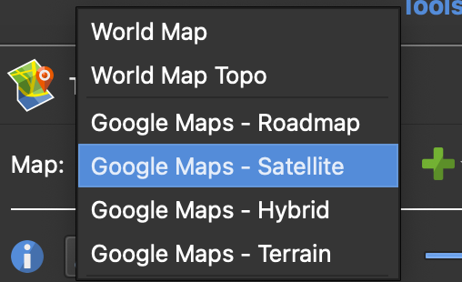
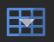

Adding Images
Loading images
The first step when building a virtual trip is to load the 360° images into the project. There are two ways to load images:
-
Option 1: Click the input icon () in the top-left toolbar. When the file selection dialog box appears, navigate to the tutorial files, select all four images, and click
Open. -
Option 2: Select all four images in your file browser (outside of the application) and drag them directly into the Pano2VR application.
{kind=link}
Follow along
This tutorial contains four 360° images of Waikumete Cemetery. Add the four images using one of the options above. Once added, the images should now appear in the tour browser panel at the bottom of the screen.
{kind=link}
If the Tour Browser panel isn't already be open (or if it is accidentally closed), it can be reopened by clicking on the Tour Browser icon () in the Edit toolbar, or using the menubar by clicking Window → Tour Browser.
{kind=link}
Pro tip
Pano2VR defaults to displaying the original image description at the time of capture, rather than the filename of the image. The image description can be modified using the exiftool package in the command line.
Adding or modifying the geolocation of the images
Some images will already contain GPS information embedded in their metadata, while others will not. Regardless, it is always a good idea to confirm that the geolocation information is correct.
To add geolocation information:
-
Select the image in the Tour Browser panel.
-
Enter the address where the photo was taken into the
Addressfield. A green flag will be dropped at this location. -
Confirm or refine the location:
- If the green flag is placed correctly, click on it to drop a red pin should appear and confirm the location.
- If the green flag is not placed correctly, navigate to the correct location and double-click to drop a red pin.
Once the red pin appears, its placement can be further refined by either dragging the pin or nudging it with the arrow keys.
{kind=link}
Follow along
To assign geolocation information for WaikumeteCemetery1.JPG (WC1):
- Select the image in the Tour Browser panel.
- In the
Addressfield, type Waikumete Cemetery. Press enter or click the magnifying glass icon to search. A green flag will be dropped in the middle of Waikumete Cemetery. - Manually update the location of the image.
- The exact location where Waikumete Cemetery 1 was taken is marked with the red star on the lefthand image below.
- Zoom in to this location and double-click to drop the red pin.
- If necessary, refine the placement by dragging the pin or nudging it with the arrow keys. The location of the pin should match the righthand image below.
{kind=link}
{kind=link}
Pro tip
The default basemap is the World Map. In some situations, this map may not provide enough detail to precisely identify where an image was taken. Use the Map field to toggle between different basemap options, such as World Map Topo or Google Maps – Satellite.
{kind=link}
Orienting the images
Once the geolocation pin is in the correct position, the next step is to orient the image. The red semicircle extending for the pin should match the orientation visible on the 360° image.
Pano2VR uses landmarks to help reorient images. To do this:
- Find a landmark that is visible in both the image and the map.
- Align the landmark in the centre of the image by clicking and dragging until it is centred in the crosshairs of the red grid lines.
- Select Pick Landmark from the Tools icon.
- Double-click on the landmark in the Tour Map.
Follow along
We'll use the church as the landmark to orient the WaikumeteCemetery1 image:
- Roate the 360° image until the church is centred in the crosshairs of the red grid lines.
- Select Pick Landmark from the Tools icon.
- Double-click on the church at the end of the road in the Tour Map.
{kind=link}
The image view should now align with the map orientation. Navigate around the 360° image to make sure that the Tour Map view correctly follows the movements.
Troubleshooting
Grid lines should appear automatically once the images are loaded. However, if they are not visible, click the grid icon () at the bottom of the image to toggle the grid lines on.
{kind=link}
Leveling the images
While Pano2VR does automatically level images, they can still sometimes appear tilted or skewed, depending on the angle of the tripod was on when the image was captured and the complexity of the terrain. This can be fixed by manually leveling the image.
To show the automatic alignment to equitorial level, press the L key.
To manually adjust the level of image:
- hold down the L key and left click to drag the image into level.
- the location of the cursor marks the fulcrum of the levelling rotation.
- clicking on the centre vertical red line moves the horizon up and down (use the arrow keys for finer control).
Once the image has been relevelled, rotate the image horizontally (east or west) and press L again to recheck the level from a new angle. Repeat this process as needed. Some images may require trial and error to find a level that feels balanced from all directions.
Follow along
The Waikumete Cemetery images are mostly level, but follow the steps above to see if the leveling can be improved further. Try to find a level that works in all directions.
Pro tip
Aligning the image to clear visual references, such as buildings, the horizon, or any other vertical or horizontal features can improve accuracy.